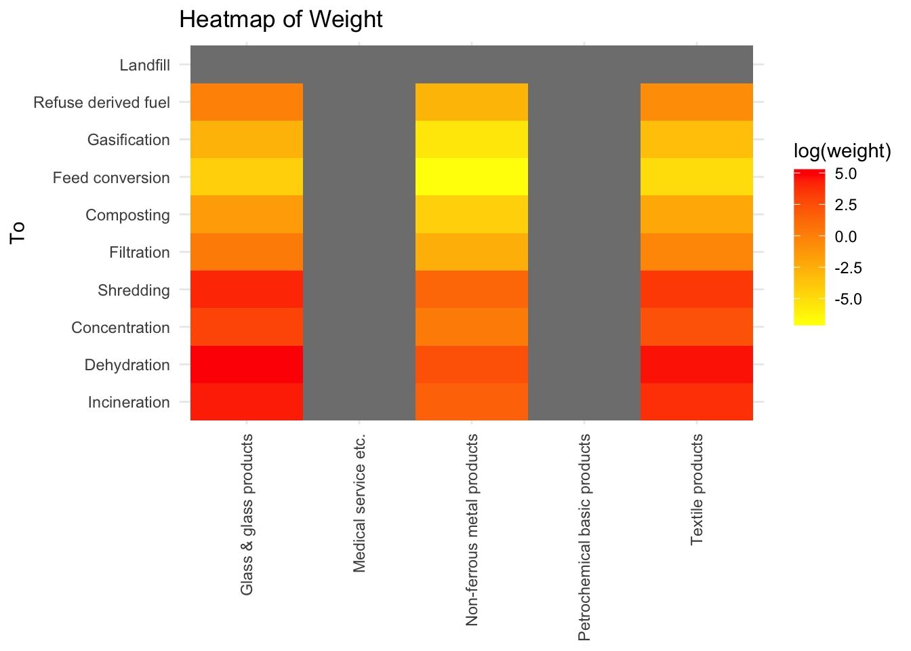
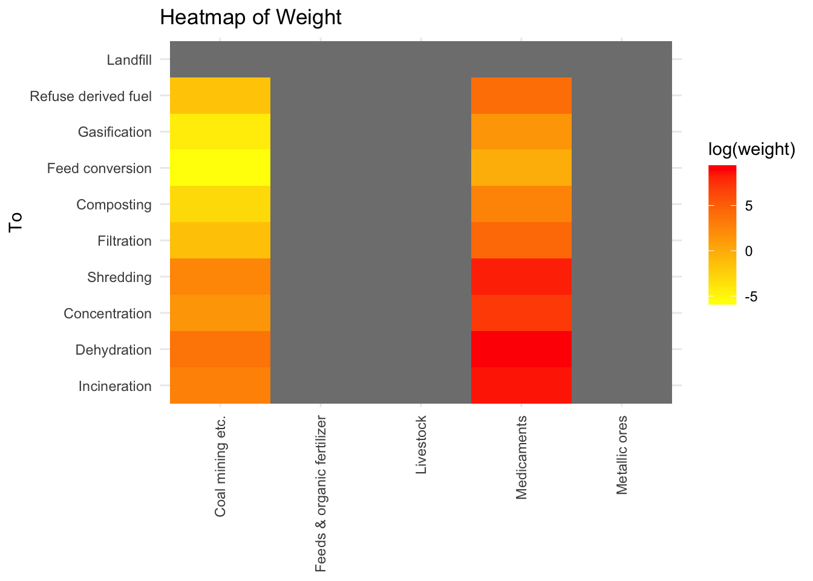

We are living in a world that produces a huge volume of waste everyday. It is estimated that by 2050, the global waste produced will be more than 3.4 billion tons every year. Certain industries produce large volume of waste while some other industries are considered to be cleaner than others. The world has already moved towards recycling as a part of reducing waste dumped in overall. Waste materials produced by certain industries can be used as raw material for certain other industries. This project is an attempt to study the input-output data of materials between industries and the categories of wastes each industries produce. The dataset is from the ‘Waste Input Output Analysis’ by Nakamura, S. and Kondo, Yasushi. It is a data from Japan and therefore the economic flow is given in 1 million Japanese yen. The analysis will help us to find which all industries serve how many other industries with the goods they produce and compare it with the waste emission by each of those industires.
Research Question
How the most influencial industries in terms of their interaction to other industries contribute to the wastes produced?
The dataset has 294 rows and 103 columns. We are interested in only the output flow between industries and the waste flow from industries to different waste management processes. Therefore, we can trim the data as a subset which is in the form we want.
## Cleaning Data
There are negative values in the ‘weight’ column. When the value is negative in directed network, it could be probably because the transaction was done in the reverse direction. So, assuming likewise, we can swap the from and to where weight is negative and then get the absolute values for weight so that we don’t want to deal with anymore negative values!
from to weight waste_process
1 Coal mining etc. Incineration 16.705982 1
2 Textile products Incineration 44.167870 1
3 Wearing apparel etc. Incineration 2035.383591 1
4 Lumber and wood products Incineration 2.975038 1
5 Furniture & fixtures Incineration 2438.157947 1
6 Pulp & paper Incineration 192.004366 1
Creating the network
Code
g_df <-graph_from_data_frame(df_long)# Extract the weighted vertex attribute values from the dataframe#vertex_attributes <- df[, 82:92]E(g_df)$weight <- df_long$weight#E(g_df)$waste_process <- df_long$waste_processprocess_names <-c("Incineration", "Dehydration", "Concentration", "Shredding", "Filtration", "Composting","Feed conversion", "Gasification", "Refuse derived fuel", "Landfill")# Create an empty vector to store the attribute valuesvertex_attribute <-rep("industry", vcount(g_df))# Find the vertices with names in the list and assign attribute value of "waste processing"matching_vertices <-which(V(g_df)$name %in% process_names)vertex_attribute[matching_vertices] <-"waste processing"# Add the vertex attribute to the graphV(g_df)$process <- vertex_attribute#V(g_df)$processls(df_long)
[1] "from" "to" "waste_process" "weight"
Code
#plot(g_df)
Describing the Network Data
Code
vcount(g_df)
[1] 90
Code
ecount(g_df)
[1] 4167
Code
is_bipartite(g_df)
[1] FALSE
Code
is_directed(g_df)
[1] TRUE
Code
is_weighted(g_df)
[1] TRUE
The network has 90 vertices and 4167 edges.
Code
summary(E(g_df)$weight)
Min. 1st Qu. Median Mean 3rd Qu. Max.
0 467 5410 110218 36673 11899111
Let us look at the clustering pattern in a global level of network
Code
transitivity(g_df)
[1] 0.818957
The network has a high level of transitivity. It means, when two nodes are connected to a neighbouring node, it is highly likely that all of them are connected to each other.
Local Transitivity / Clustering
Now let us look at the Local transitivity. Since the number of vertices are fairly high, we will look on the average clustering coefficient rather than local clustering coefficient.
Code
transitivity(g_df, type ="average")
[1] 0.8658444
The average clustering coefficient of 0.8658 suggests that the network is highly clustered. This means that the network has tightly connected sub groups/clusters.
Path Length and Geodesic
Code
average.path.length(g_df, directed = F)
[1] 7.457572
The average path length of the network is 7.45.
Component Structure and Membership
Code
names(igraph::components(g_df)) # Elements of components
[1] "membership" "csize" "no"
Code
igraph::components(g_df)$no
[1] 1
Code
igraph::components(g_df)$csize
[1] 90
Code
#igraph::components(g_df)$membership
The component structure shows that there is only one big component with 90 members. In other words, there is no isolates in this network.
Density of Network
Code
graph.density(g_df)
[1] 0.5202247
The network has a 0.5202 density which means 0.5202 proportion of all possible ties are present in this network.
Creating a Dataframe with the Vertex Degree values
name degree indegree
Commerce Commerce 135 43
Miscellaneous metal products Miscellaneous metal products 145 54
Misc. manufacturing products Misc. manufacturing products 152 61
Wearing apparel etc. Wearing apparel etc. 132 42
Final chemical products Final chemical products 144 54
outdegree
Commerce 92
Miscellaneous metal products 91
Misc. manufacturing products 91
Wearing apparel etc. 90
Final chemical products 90
Code
df_degree |>arrange(desc(indegree)) |>slice(1:5)
name degree indegree
Pig iron & crude steel Pig iron & crude steel 76 66
Public administration Public administration 66 65
Misc. manufacturing products Misc. manufacturing products 152 61
Transport & post service Transport & post service 151 61
Personal services Personal services 150 61
outdegree
Pig iron & crude steel 10
Public administration 1
Misc. manufacturing products 91
Transport & post service 90
Personal services 89
Summary statistics of Network Degree
Code
summary(df_degree)
name degree indegree outdegree
Length:90 Min. : 38.00 Min. :17.00 Min. : 0.00
Class :character 1st Qu.: 57.75 1st Qu.:39.25 1st Qu.:10.25
Mode :character Median : 89.00 Median :48.00 Median :41.00
Mean : 92.60 Mean :46.30 Mean :46.30
3rd Qu.:126.75 3rd Qu.:52.00 3rd Qu.:86.00
Max. :152.00 Max. :66.00 Max. :92.00
name degree indegree
Pig iron & crude steel Pig iron & crude steel 76 66
Public administration Public administration 66 65
Personal services Personal services 150 61
Transport & post service Transport & post service 151 61
Misc. manufacturing products Misc. manufacturing products 152 61
outdegree eigen
Pig iron & crude steel 10 1.0000000
Public administration 1 0.9623841
Personal services 89 0.9102065
Transport & post service 90 0.9087712
Misc. manufacturing products 91 0.8899521
name degree indegree
Petrochemical basic products Petrochemical basic products 64 33
Medical service etc. Medical service etc. 82 54
Textile products Textile products 121 48
Non-ferrous metal products Non-ferrous metal products 124 50
Glass & glass products Glass & glass products 116 48
outdegree eigen bonpow
Petrochemical basic products 31 0.4740734 1.980978
Medical service etc. 28 0.7887455 1.940789
Textile products 73 0.6824618 1.842212
Non-ferrous metal products 74 0.7380666 1.829821
Glass & glass products 68 0.6934170 1.790583
Derived and Reflected Centrality
Code
matrix_df_degree <-as.matrix(as_adjacency_matrix(g_df, attr ="weight"))# Square the adjacency matrixmatrix_df_degree_sq <-t(matrix_df_degree) %*% matrix_df_degree# Calculate the proportion of reflected centralitydf_degree$rc <-diag(matrix_df_degree_sq)/rowSums(matrix_df_degree_sq)# Replace missing values with 0df_degree$rc <-ifelse(is.nan(df_degree$rc), 0, df_degree$rc)# Calculate received eigen value centralitydf_degree$eigen.rc <- df_degree$eigen * df_degree$rc
Code
# Calculate the proportion of derived centralitydf_degree$dc <-1-diag(matrix_df_degree_sq)/rowSums(matrix_df_degree_sq)# Replace missing values with 0df_degree$dc <-ifelse(is.nan(df_degree$dc), 0, df_degree$dc)# Calculate derived eigen value centralitydf_degree$eigen.dc <- df_degree$eigen * df_degree$dc
Feeds & organic fertilizer, Metallic ores and Medicaments are the most reduntant industries while Misc. ceramic, stone & clay products, Glass & glass products and Industrial inorganic chemicals industries are the least reduntant ones.
Centrality Measure Correlations
Code
corrplot ::corrplot(cor(df_degree[ , -1]), title ='Correlation Plot')
industry_io.node <-data.frame(apply(df_degree[ , -1], 2, function (x) df_degree$name[order(x, decreasing =TRUE)][1:10]))industry_io.node
degree indegree
1 Misc. manufacturing products Pig iron & crude steel
2 Transport & post service Public administration
3 Personal services Misc. manufacturing products
4 Business services Transport & post service
5 Miscellaneous metal products Personal services
6 Final chemical products Business services
7 Repair of construction Production machinery
8 Communications & broadcasting Lumber and wood products
9 Activities not elsewhere classified Building construction
10 Lumber and wood products General-purpose machinery
outdegree eigen
1 Commerce Pig iron & crude steel
2 Miscellaneous metal products Public administration
3 Misc. manufacturing products Personal services
4 Wearing apparel etc. Transport & post service
5 Final chemical products Misc. manufacturing products
6 Petroleum refinery products Business services
7 Electricity Production machinery
8 Transport & post service Building construction
9 Printing etc. Misc. transportation equipment & repair
10 Repair of construction Lumber and wood products
bonpow rc
1 Petrochemical basic products Petroleum refinery products
2 Medical service etc. Steel products
3 Textile products Motor vehicle parts & accessories
4 Non-ferrous metal products Pig iron & crude steel
5 Glass & glass products Passenger motor cars
6 General-purpose machinery Medical service etc.
7 Cement & cement products Foods
8 Synthetic fibers Non-ferrous metal products
9 Pottery, china & earthenware Real estate services
10 Metal products for construction Communications & broadcasting
eigen.rc dc
1 Pig iron & crude steel Feed conversion
2 Petroleum refinery products Gasification
3 Motor vehicle parts & accessories Composting
4 Steel products Refuse derived fuel
5 Passenger motor cars Filtration
6 Medical service etc. Metallic ores
7 Foods Coal mining etc.
8 Non-ferrous metal products Concentration
9 Transport & post service Agricultural services
10 Communications & broadcasting Pottery, china & earthenware
eigen.dc close
1 Public administration Misc. electronic components
2 Misc. manufacturing products Household electronics equipment
3 Lumber and wood products Forestry
4 Personal services Medical service etc.
5 Public construction Glass & glass products
6 Misc. transportation equipment & repair Steel products
7 Production machinery Pottery, china & earthenware
8 Building construction Chemical fertilizer
9 Transport & post service Non-ferrous metal products
10 Ships & repair of ships Rubber products
between constraint
1 Glass & glass products Feeds & organic fertilizer
2 Pottery, china & earthenware Metallic ores
3 Forestry Medicaments
4 Chemical fertilizer Livestock
5 Metallic ores Coal mining etc.
6 Coal products Miscellaneous cars
7 Feeds & organic fertilizer Passenger motor cars
8 Lumber and wood products Petrochemical basic products
9 Textile products Fishery
10 Pig iron & crude steel Pig iron & crude steel
Code
df_degree_io <- df_degree
These are the industries having the highest of centrality measures for the industries network. The nodes having higher indegrees have more inwards directed edges while outdegree gives an idea about how the outwards connections are for the node. Eigen vector, Bonacich value, Eigen Reflected Centrality, Eigen Derived Centrality are various measures of centrality of nodes. These measures suggests how influential the nodes are. Betweenness is a measure of the position of nodes in terms of closeness to other influential nodes. Constraint tells us about the level of redundancy of a node in the network to create connections with other neighbouring nodes.
Most and Least influential industries and their contribution to the waste output
Eventhough the different measures of centrality talks about the significance and influence of nodes, we are taking into consideration, Bonacich power and Constraint here to compare the waste output.
Error in eval(expr, envir, enclos): object 'combined_df' not found
Code
# Rename the "Industries" column to "From"colnames(combined_df_long)[colnames(combined_df_long) =="...1"] <-"from"
Error: object 'combined_df_long' not found
Code
combined_df_long
Error in eval(expr, envir, enclos): object 'combined_df_long' not found
Waste output from most significant industries
Code
filter1_long <-melt(filtered_data1, id.vars ="...1", variable.name ="to", value.name ="weight", variable.factor =FALSE)# Rename the "Industries" column to "From"colnames(filter1_long)[colnames(filter1_long) =="...1"] <-"from"#filter1_long# Create a heatmap plotggplot(filter1_long, aes(x = from, y = to, fill =log(weight))) +geom_tile() +scale_fill_gradient(low ="yellow", high ="red") +# Change the color patternlabs(x =NULL, y ="To", title ="Heatmap of Weight") +theme_minimal() +theme(axis.text.x =element_text(angle =90, vjust =0.5, hjust =1)) # Rotate x-axis labels

Waste output from industries with high redundancy
Code
filter2_long <-melt(filtered_data2, id.vars ="...1", variable.name ="to", value.name ="weight", variable.factor =FALSE)# Rename the "Industries" column to "From"colnames(filter2_long)[colnames(filter2_long) =="...1"] <-"from"#filter2_long# Create a heatmap plotggplot(filter2_long, aes(x = from, y = to, fill =log(weight))) +geom_tile() +scale_fill_gradient(low ="yellow", high ="red") +# Change the color patternlabs(x =NULL, y ="To", title ="Heatmap of Weight") +theme_minimal() +theme(axis.text.x =element_text(angle =90, vjust =0.5, hjust =1)) # Rotate x-axis labels

Conclusion
The results show how much wastes go to each of the waste processing methods from the industries having most centrality measures and the most redundancy measures.
Limitation
The dataset is an older data. It is from Japan. Taking these things into consideration, we cannot make a solid conclusion about the waste outputs from industries in other parts of the world today. Also, we can compare the weight outputs from industries having each of the centrality score high and low. This would make the analysis even harder. So this study has been concluded with the available results.
Reference:
Nakamura, S. (2020). Tracking the Product Origins of Waste for Treatment Using the WIO Data Developed by the Japanese Ministry of the Environment. Env. Sci. Technol. https://doi.org/10.1021/acs.est.0c06015
Source Code
---title: "Final Project"author: "Jerin Jacob"description: ""date: "02/22/2023"format: html: toc: true code-fold: true code-copy: true code-tools: true# editor: visualcategories: - final_project# output:# pdf_document: default---```{r}#| label: setup#| include: falselibrary(tidyverse)library(igraph)library(statnet)library(readxl)library(network)library(reshape2)library(corrr)library(dplyr)#library(googlesheets4)```# IntroductionWe are living in a world that produces a huge volume of waste everyday. It is estimated that by 2050, the global waste produced will be more than 3.4 billion tons every year. Certain industries produce large volume of waste while some other industries are considered to be cleaner than others. The world has already moved towards recycling as a part of reducing waste dumped in overall. Waste materials produced by certain industries can be used as raw material for certain other industries.This project is an attempt to study the input-output data of materials between industries and the categories of wastes each industries produce. The dataset is from the 'Waste Input Output Analysis' by Nakamura, S. and Kondo, Yasushi. It is a data from Japan and therefore the economic flow is given in 1 million Japanese yen. The analysis will help us to find which all industries serve how many other industries with the goods they produce and compare it with the waste emission by each of those industires. # Research QuestionHow the most influencial industries in terms of their interaction to other industries contribute to the wastes produced?Reading the Data```{r}data_2011 <-read_xlsx("_data/Project_data/WIO_2011.xlsx", sheet ="WIOdata")head(data_2011)#data_2011dim(data_2011)```The dataset has 294 rows and 103 columns. We are interested in only the output flow between industries and the waste flow from industries to different waste management processes. Therefore, we can trim the data as a subset which is in the form we want. ## Cleaning Data```{r}df <- data_2011[1:81, 1:92]head(df)industry_io <- data_2011[1:81, 1:82]waste_io <- data_2011[1:81, c(1, 83:92)]head(waste_io)```# Creating NetworkAfter cleaning the dataset, next step is to create network data out of it. ```{r}#df <- industry_io# Transform the data to long formatdf_long <-melt(df, id.vars ="...1", variable.name ="to", value.name ="weight", variable.factor =FALSE)# Rename the "Industries" column to "From"colnames(df_long)[colnames(df_long) =="...1"] <-"from"# Drop rows with weight 0df_long <- df_long[df_long$weight !=0, ]df_long <- df_long |>mutate(waste_process =ifelse(to %in%c("Incineration", "Dehydration", "Concentration", "Shredding", "Filtration", "Composting","Feed conversion", "Gasification", "Refuse derived fuel", "Landfill"), 1, 0))head(df_long)dim(df_long)```There are negative values in the 'weight' column. When the value is negative in directed network, it could be probably because the transaction was done in the reverse direction. So, assuming likewise, we can swap the from and to where weight is negative and then get the absolute values for weight so that we don't want to deal with anymore negative values! ```{r}str(df_long)df_long$to <-as.character(df_long$to)df_long <- df_long %>%mutate(new_from =ifelse(weight <0, to, from),new_to =ifelse(weight <0, from, to)) %>%select(-c(from, to)) %>%mutate(weight =abs(weight)) %>%rename(from = new_from, to = new_to)df_long <- df_long[, c("from", "to", "weight", "waste_process")]df_long |>filter(waste_process ==1) |>head()```## Creating the network```{r}g_df <-graph_from_data_frame(df_long)# Extract the weighted vertex attribute values from the dataframe#vertex_attributes <- df[, 82:92]E(g_df)$weight <- df_long$weight#E(g_df)$waste_process <- df_long$waste_processprocess_names <-c("Incineration", "Dehydration", "Concentration", "Shredding", "Filtration", "Composting","Feed conversion", "Gasification", "Refuse derived fuel", "Landfill")# Create an empty vector to store the attribute valuesvertex_attribute <-rep("industry", vcount(g_df))# Find the vertices with names in the list and assign attribute value of "waste processing"matching_vertices <-which(V(g_df)$name %in% process_names)vertex_attribute[matching_vertices] <-"waste processing"# Add the vertex attribute to the graphV(g_df)$process <- vertex_attribute#V(g_df)$processls(df_long)#plot(g_df)```# Describing the Network Data```{r}vcount(g_df)ecount(g_df)is_bipartite(g_df)is_directed(g_df)is_weighted(g_df)```The network has 90 vertices and 4167 edges.```{r}summary(E(g_df)$weight)``````{r}vertex_attr_names(g_df)edge_attr_names(g_df)```## Dyad & Triad Census```{r}igraph::dyad.census(g_df)``````{r}igraph::triad_census(g_df)sum(igraph::triad_census(g_df))(90*89*88)/(3*2)```## Transitivity/ Global ClusteringLet us look at the clustering pattern in a global level of network```{r}transitivity(g_df)```The network has a high level of transitivity. It means, when two nodes are connected to a neighbouring node, it is highly likely that all of them are connected to each other. ## Local Transitivity / ClusteringNow let us look at the Local transitivity. Since the number of vertices are fairly high, we will look on the average clustering coefficient rather than local clustering coefficient.```{r}transitivity(g_df, type ="average")```The average clustering coefficient of 0.8658 suggests that the network is highly clustered. This means that the network has tightly connected sub groups/clusters. ## Path Length and Geodesic```{r}average.path.length(g_df, directed = F)```The average path length of the network is 7.45. # Component Structure and Membership```{r}names(igraph::components(g_df)) # Elements of components``````{r}igraph::components(g_df)$no``````{r}igraph::components(g_df)$csize``````{r}#igraph::components(g_df)$membership```The component structure shows that there is only one big component with 90 members. In other words, there is no isolates in this network.# Density of Network```{r}graph.density(g_df)```The network has a 0.5202 density which means 0.5202 proportion of all possible ties are present in this network. ## Creating a Dataframe with the Vertex Degree values```{r}df_degree <-data.frame(name =V(g_df)$name, degree = igraph::degree(g_df))head(df_degree)```## In degree and out degree```{r}df_degree <- df_degree |>mutate(indegree = igraph::degree(g_df, mode ="in"), outdegree = igraph::degree(g_df, mode ="out"))df_degree |>arrange(desc(outdegree)) |>slice(1:5)df_degree |>arrange(desc(indegree)) |>slice(1:5)```## Summary statistics of Network Degree```{r}summary(df_degree)```## Network Degree Distribution```{r}df_degree %>% melt %>%filter(variable !='output'& variable !='eigen.centrality') %>%ggplot(aes(x = value, fill = variable, color = variable)) +geom_density(alpha = .2, bw =5) +ggtitle('Degree Distribution')```The distribution of degrees shows that the indegree values are more at a level of 50.## Network Degree Centralization```{r}centr_degree(g_df, mode ="in")$centralizationcentr_degree(g_df, mode ="out")$centralization```# Eigen Vector```{r}temp_eigen <-centr_eigen(g_df, directed = T)names(temp_eigen)``````{r}length(temp_eigen$vector)``````{r}temp_eigen$vector``````{r}temp_eigen$centralization```## Adding Eigen Vector to node level measures dataframe```{r}df_degree$eigen <-centr_eigen(g_df, directed = T)$vector#df_degreearrange(df_degree, desc(eigen)) |>slice(1:5)```## Bonacich Power Centrality to the dataframe```{r}df_degree$bonpow <-power_centrality(g_df)df_degree |>arrange(desc(bonpow)) |>slice(1:5)```## Derived and Reflected Centrality```{r}matrix_df_degree <-as.matrix(as_adjacency_matrix(g_df, attr ="weight"))# Square the adjacency matrixmatrix_df_degree_sq <-t(matrix_df_degree) %*% matrix_df_degree# Calculate the proportion of reflected centralitydf_degree$rc <-diag(matrix_df_degree_sq)/rowSums(matrix_df_degree_sq)# Replace missing values with 0df_degree$rc <-ifelse(is.nan(df_degree$rc), 0, df_degree$rc)# Calculate received eigen value centralitydf_degree$eigen.rc <- df_degree$eigen * df_degree$rc``````{r}# Calculate the proportion of derived centralitydf_degree$dc <-1-diag(matrix_df_degree_sq)/rowSums(matrix_df_degree_sq)# Replace missing values with 0df_degree$dc <-ifelse(is.nan(df_degree$dc), 0, df_degree$dc)# Calculate derived eigen value centralitydf_degree$eigen.dc <- df_degree$eigen * df_degree$dc```## Centrality Score Distribution```{r}df_degree |>select(-name) |>gather() |>ggplot(aes(value)) +geom_histogram() +facet_wrap(~key, scales ="free")```## Centrality Measure Correlations## Closeness Centrality```{r}df_degree$close <- igraph::closeness(g_df)df_degree |>arrange(desc(close)) |>slice(1:5)```## Betweenness Centrality```{r}df_degree$between <- igraph::betweenness(g_df)df_degree |>arrange(desc(between)) |>slice(1:5)```We can calculate the network level score of betweenness centralization```{r}centr_betw(g_df)$centralization```## Network Constraint```{r}df_degree$constraint <-constraint(g_df)df_degree |>arrange(constraint) |>slice(1:5)df_degree |>arrange(desc(constraint)) |>slice(1:5)```Feeds & organic fertilizer, Metallic ores and Medicaments are the most reduntant industries while Misc. ceramic, stone & clay products, Glass & glass products and Industrial inorganic chemicals industries are the least reduntant ones.## Centrality Measure Correlations```{r}corrplot ::corrplot(cor(df_degree[ , -1]), title ='Correlation Plot')``````{r}table1 <- kableExtra ::kable(apply(df_degree[ , -1], 2, function (x) df_degree$name[order(x, decreasing =TRUE)][1:10]))table1industry_io.node <-data.frame(apply(df_degree[ , -1], 2, function (x) df_degree$name[order(x, decreasing =TRUE)][1:10]))industry_io.nodedf_degree_io <- df_degree```These are the industries having the highest of centrality measures for the industries network. The nodes having higher indegrees have more inwards directed edges while outdegree gives an idea about how the outwards connections are for the node. Eigen vector, Bonacich value, Eigen Reflected Centrality, Eigen Derived Centrality are various measures of centrality of nodes. These measures suggests how influential the nodes are. Betweenness is a measure of the position of nodes in terms of closeness to other influential nodes. Constraint tells us about the level of redundancy of a node in the network to create connections with other neighbouring nodes.# Most and Least influential industries and their contribution to the waste outputEventhough the different measures of centrality talks about the significance and influence of nodes, we are taking into consideration, Bonacich power and Constraint here to compare the waste output.```{r}df_bonpow <- df_degree |>arrange(desc(bonpow)) |>slice(1:5)df_constraint <- df_degree |>arrange(desc(constraint)) |>slice(1:5)industry_waste <- data_2011 |>select(...1, 83:92)industry_wastefiltered_data1 <- industry_waste[industry_waste$...1%in% df_bonpow$name, ]filtered_data2 <- industry_waste[industry_waste$...1%in% df_constraint$name, ]``````{r}combined_df_long <-melt(combined_df, id.vars ="...1", variable.name ="to", value.name ="weight", variable.factor =FALSE)# Rename the "Industries" column to "From"colnames(combined_df_long)[colnames(combined_df_long) =="...1"] <-"from"combined_df_long```## Waste output from most significant industries```{r}filter1_long <-melt(filtered_data1, id.vars ="...1", variable.name ="to", value.name ="weight", variable.factor =FALSE)# Rename the "Industries" column to "From"colnames(filter1_long)[colnames(filter1_long) =="...1"] <-"from"#filter1_long# Create a heatmap plotggplot(filter1_long, aes(x = from, y = to, fill =log(weight))) +geom_tile() +scale_fill_gradient(low ="yellow", high ="red") +# Change the color patternlabs(x =NULL, y ="To", title ="Heatmap of Weight") +theme_minimal() +theme(axis.text.x =element_text(angle =90, vjust =0.5, hjust =1)) # Rotate x-axis labels```## Waste output from industries with high redundancy```{r}filter2_long <-melt(filtered_data2, id.vars ="...1", variable.name ="to", value.name ="weight", variable.factor =FALSE)# Rename the "Industries" column to "From"colnames(filter2_long)[colnames(filter2_long) =="...1"] <-"from"#filter2_long# Create a heatmap plotggplot(filter2_long, aes(x = from, y = to, fill =log(weight))) +geom_tile() +scale_fill_gradient(low ="yellow", high ="red") +# Change the color patternlabs(x =NULL, y ="To", title ="Heatmap of Weight") +theme_minimal() +theme(axis.text.x =element_text(angle =90, vjust =0.5, hjust =1)) # Rotate x-axis labels```# ConclusionThe results show how much wastes go to each of the waste processing methods from the industries having most centrality measures and the most redundancy measures.# LimitationThe dataset is an older data. It is from Japan. Taking these things into consideration, we cannot make a solid conclusion about the waste outputs from industries in other parts of the world today. Also, we can compare the weight outputs from industries having each of the centrality score high and low. This would make the analysis even harder. So this study has been concluded with the available results.# Reference:1) Nakamura, S. (2020). Tracking the Product Origins of Waste for Treatment Using the WIO Data Developed by the Japanese Ministry of the Environment. Env. Sci. Technol. https://doi.org/10.1021/acs.est.0c06015